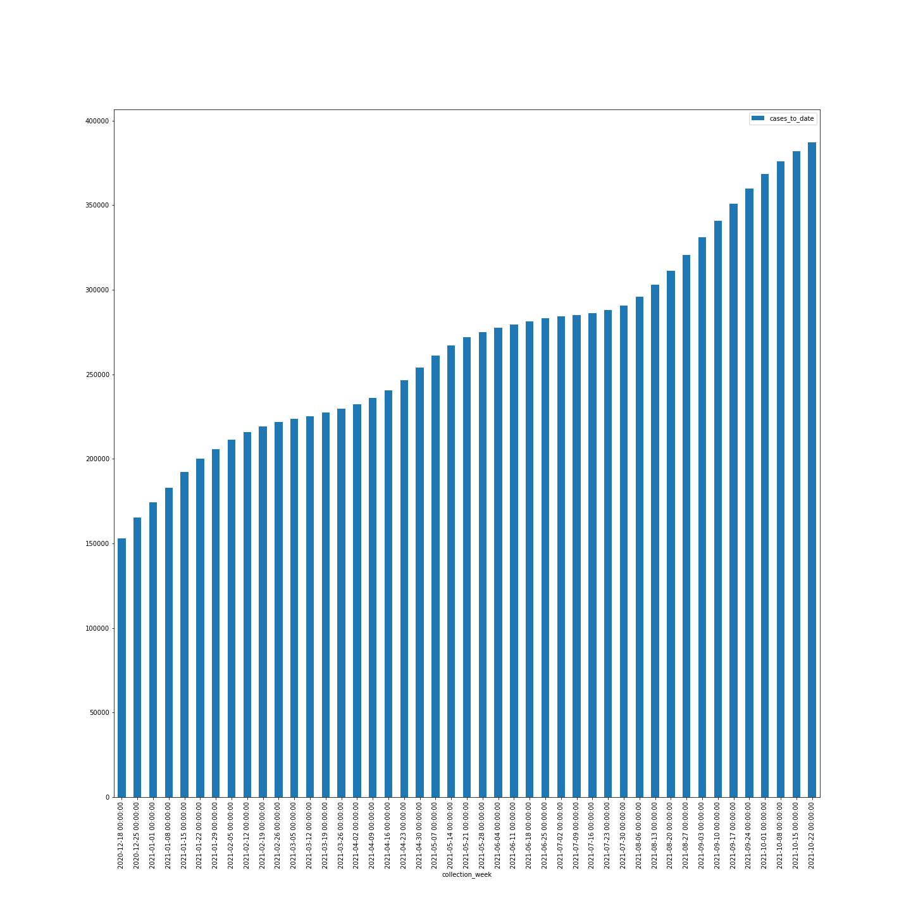
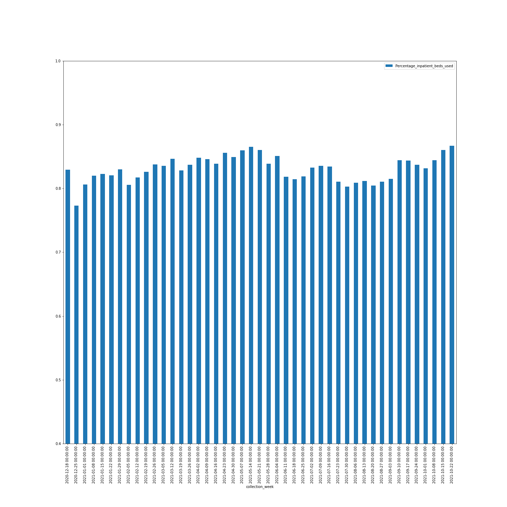
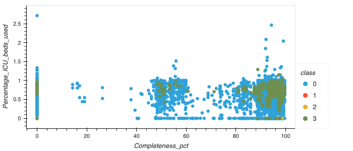
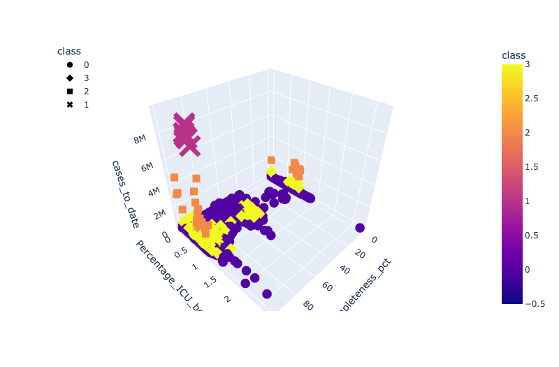

Data Exploration
Data Retrtieval
Data was exported from The New York Times (referred to as the 'counties' dataset), CDC ('vaccinations' dataset), and healthdata.gov ('hospitals' dataset). The three datasets were then loaded into S3 buckets as they are too large to upload to github.
Intial Exploration and Database Creation
The initial data cleaning notebook, Deliverable_1_input_data, then uses pandas to read three datasets into individual dataframes. Unnecessary columns are then dropped from all three dataframes, including columns with categorical and some float data types, age range columns, and hospital coverage columns. The 'hospitals' dataset only contains weekly aggregations of its data, while the other two datasets contain daily reporting. The 'counties' and 'vaccinations' datasets are aggregated to report weekly totals on the same collection dates as 'hospitals'. To provide a common primary key among the three dataframes, the fips and date columns are turned into and string datatype and concatenated to fomr the fips_date coulmn. A list of unique fips_date values was generated and then removed from all three dataframes, to return equal length dataframes that can easily be merge in PostgreSQL. The remaining float data types are then converted to integers in all three dataframes. Column names are abbreviated to prevent truncating them in SQL. A connection string is then created using create_engine from sqlalchemy to create the schema and load the data into tables in PostgreSQL. After being loaded, the schema needs to be adjusted to create primary keys (fips_date) for the three tables.
Secondary Data Cleaning
The data is then read back into the next notebook, Postgres to ML Model Connection, using a SQL join for 'counties' and 'hospitals' creating merged_df and using 'vaccinations' to create vaccinations_df. The two dataframes are then merged and redundant columns are dropped to create ml_ready_df, which contains data from all three tables. Percentage and totals columns are then created adding and/or dividing columns by one another. Infinite values are then changed to NaN and all null rows are dropped.
The images below were from our initial analysis of what the data looked like and include barcharts of case data vs time and hospital capacity vs time.


Machine Learning Analysis
Preliminary feature of engineering:
Linear regression 1 model is designed to predict number of beds needs for COVID patient for facilities. Since our data is collected in weekly base, users can input past weeks data (number of patients who are or might have COVID-19) into the model to predict the number of beds that will be used for upcoming week. Linear regression model 2 model is designed to predict the number of deaths through the number of cases. The number of cases and deaths per week are selected for linear regression model and it will estimate the relationship between independent variable(cases) and one dependent variable(deaths). Additionally, for linear regression model 2, another variable (adult patients who are in ICU bed for COVID) is added to give further estimation of correlation of death and thr rest two variables.
How data was split into training and testing sets:
For both linear regression model, dependent variable X is reshaped to specify the number of rows and columns. They are fitted (trained) to see the patterns in the data and generate prediction of independent variable(bed needed and deaths). The additional variable (adult patients who are in ICU bed for COVID) and cases for linear regression model 2 is splited into training and testing 0.8 : 0.2. We want to keep 20% of the data subset of the entire dataset for the testing purposes and training the rest 80% for prediction. X train and y train subsets are trained and output is predicted by following tested dependent variables. The accuracy performance of the model 2 was 0.903 which we can be concluded it's prediction is accurate up to 90% of the time.
Model choice:
The dataset we have is manipulated for continous variables. Supervised machine learning models fits to the dataset we have and also incline to have somewhat pair variables. Thus it was difficult to presume which variables can have possible relationship each other outside of their pairs. Linear regression model can be most effective tool to analyze these paird associated variables. The limitation of our model it's linearity. Due to multiple possible causes that are not counted in our dataset, it's linearity could be temporary (vaccination status, weather and location) or irrelevant because strong correlation does not mean it is cause and effect relationship. The benefit of linear regression is that we can build and see the relationship between the variables intuitively that could have cause and effect relationship. It is easier to interpret compare to other side of machine learning methods, which can provide meaningful relationships with what dataset we have.
The images below were grabbed during analysis of the model.

